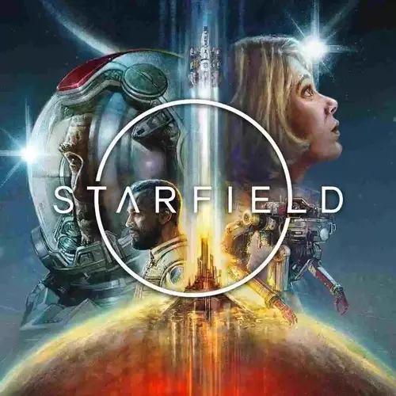
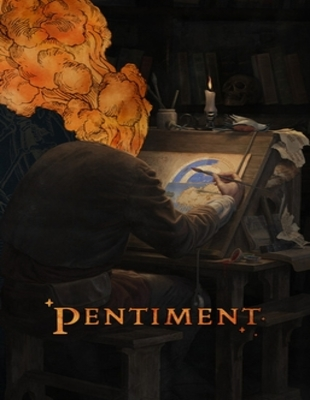
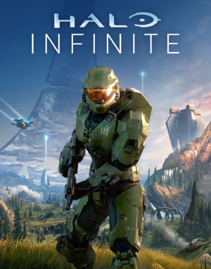

O Xbox Series X, lançado em 10 de novembro de 2020, é o modelo premium da Microsoft, oferecendo desempenho de ponta com uma CPU AMD octa-core e uma GPU de 12 TFLOPs. Com 16GB de memória RAM GDDR6 e um SSD NVMe customizado de 1 TB, ele suporta resoluções de até 4K a 120fps, Ray Tracing para gráficos realistas e uma vasta retrocompatibilidade com jogos anteriores do Xbox. O Xbox Series S é uma alternativa mais acessível, sem unidade de disco óptico, com 512 GB SSD, resolução de jogos em 1440p e taxa de quadros de até 120 FPS.
Os jogos para esses consoles são tão impressionantes quanto o hardware. Starfield, por exemplo, é uma aventura espacial da Bethesda que promete explorar o maior mistério da humanidade. No Series X, o jogo roda em 4K a 30 FPS, e após uma atualização, atinge 60 FPS. No Series S, mantém uma resolução de 1440p a 30 FPS. Ambos os consoles também oferecem acesso ao Xbox Game Pass, que permite aos jogadores desfrutar de uma biblioteca crescente de jogos.
Os jogos para esses consoles são tão impressionantes quanto o hardware. Starfield, por exemplo, é uma aventura espacial da Bethesda que promete explorar o maior mistério da humanidade. No Series X, o jogo roda em 4K a 30 FPS, e após uma atualização, atinge 60 FPS. No Series S, mantém uma resolução de 1440p a 30 FPS. Ambos os consoles também oferecem acesso ao Xbox Game Pass, que permite aos jogadores desfrutar de uma biblioteca crescente de jogos.
Além de Starfield, a biblioteca inclui Pentiment, um jogo narrativo ambientado na Europa renascentista; Halo Infinite, a mais recente entrada da série Halo; Hi-Fi Rush, um jogo de ação rítmico; e Forza Horizon 5, um jogo de corrida de mundo aberto.
|  |  |  | |
Esses consoles e jogos representam a dedicação da Microsoft em fornecer experiências imersivas e inovadoras, com hardware avançado e uma biblioteca de jogos diversificada para atender a todos os tipos de jogadores.